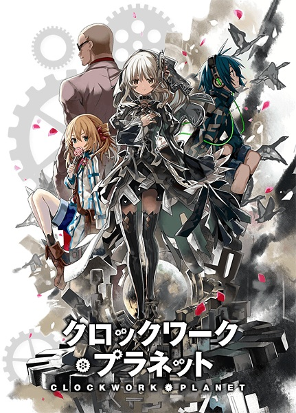

Animes Legendados
Akikan!
Hobbies são uma forma ótima de conhecer novas pessoas,
mas como poderia Kakeru Diachi, que coleciona latas raras de suco,
suspeitar que ele iria conhecer uma garota fascinante ao tentar BEBÊ-LA?
Nomeada Melon, porque ela possui ótimo... soda de melão,
Kakeru rapidamente descobre que ela é uma bela garota Akikan—a que também é uma
lata especial criada para lutar contra outras Akikans em um experimento estranho
para determinar qual tipo de lata é melhor: aço ou alumínio!
INFORMAÇÕES:
Nome: Akikan! (Empty Can!)
Autor: Riku Ranjō
Direção: Yūji Himaki
Estudio: Brain's Base
Ano: 2009
Gênero: Comédia, Ecchi, Fantasia, Harém, Romance
Episódios: 12 + 1 OVA
Status: Completo
Classificação etária: 14 anos
Clockwork Planet

Um dia, uma caixa preta subitamente caiu na casa do aluno de ensino médio Naoto Miura,
dentro dela estava um autômato feminino,
o ciclo de falha e sucesso.
O mundo imutável e os humanos que não mudam em um tempo onde a realidade e a fantasia gritam,
o encontro desses dois fazem as engrenagens do destino de moverem!